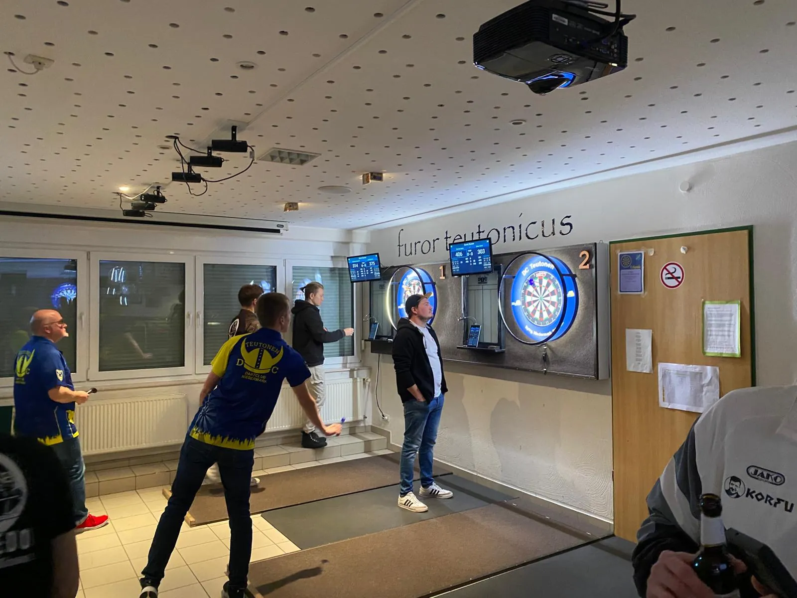

DC
DC 
Auswärtssieg in Hagen – Torpedo schlägt Teutonen B!
Was für ein Abend in Hagen! 🎯 DC Torpedo reist an, legt los wie die Feuerwehr und zeigt von der ersten Aufnahme an: Heute nehmen wir hier was mit! Es war ein Spiel voller Spannung, enger Dinger, …